<!DOCTYPE html>
<html>

<head><meta name="generator" content="Hexo 3.9.0">
    <meta charset="utf-8">
    
    <title>
        
        How to Call the Azure REST APIs with Postman In No Time Flat |
        
        Jon Gallant
    </title>
    <meta name="viewport" content="width=device-width, initial-scale=1, maximum-scale=1">
    
    <meta name="keywords" content="azure,postman,rest">
    
    <meta name="description" content="This post will show you the fastest way to call the Azure REST APIs using Postman. We’ll use:  Postman Azure Cloud Shell - https://shell.azure.com  Create Postman Collection Let’s create a Postman Col">
<meta name="keywords" content="azure,postman,rest">
<meta property="og:type" content="article">
<meta property="og:title" content="How to Call the Azure REST APIs with Postman In No Time Flat">
<meta property="og:url" content="https://blog.jongallant.com/2019/04/azure-rest-apis-postman-in-no-time-flat/index.html">
<meta property="og:site_name" content="Jon Gallant">
<meta property="og:description" content="This post will show you the fastest way to call the Azure REST APIs using Postman. We’ll use:  Postman Azure Cloud Shell - https://shell.azure.com  Create Postman Collection Let’s create a Postman Col">
<meta property="og:locale" content="en">
<meta property="og:image" content="https://blog.jongallant.com/2019/04/azure-rest-apis-postman-in-no-time-flat/000095.png">
<meta property="og:updated_time" content="2019-04-08T23:16:06.000Z">
<meta name="twitter:card" content="summary">
<meta name="twitter:title" content="How to Call the Azure REST APIs with Postman In No Time Flat">
<meta name="twitter:description" content="This post will show you the fastest way to call the Azure REST APIs using Postman. We’ll use:  Postman Azure Cloud Shell - https://shell.azure.com  Create Postman Collection Let’s create a Postman Col">
<meta name="twitter:image" content="https://blog.jongallant.com/2019/04/azure-rest-apis-postman-in-no-time-flat/000095.png">
<meta name="twitter:creator" content="@jongallant">
    

    
    <link rel="alternate" href="http://feeds.feedburner.com/jongallant" title="Jon Gallant" type="application/atom+xml">
    

    
    <link rel="icon" href="/favicon.ico">
    

    <link rel="stylesheet" href="/libs/font-awesome/css/font-awesome.min.css">
    <link rel="stylesheet" href="/libs/titillium-web/styles.css">
    <link rel="stylesheet" href="/libs/source-code-pro/styles.css">

    <link href="https://fonts.googleapis.com/css?family=Open+Sans:400,700" rel="stylesheet">
    <link rel="stylesheet" href="/css/style.css">

    <script src="/libs/jquery/2.0.3/jquery.min.js"></script>
    
    
        <link rel="stylesheet" href="/libs/lightgallery/css/lightgallery.min.css">
    
    
        <script type="text/javascript">
    (function (i, s, o, g, r, a, m) {
    i['GoogleAnalyticsObject'] = r; i[r] = i[r] || function () {
        (i[r].q = i[r].q || []).push(arguments)
    }, i[r].l = 1 * new Date(); a = s.createElement(o),
        m = s.getElementsByTagName(o)[0]; a.async = 1; a.src = g; m.parentNode.insertBefore(a, m)
    })(window, document, 'script', '//www.google-analytics.com/analytics.js', 'ga');

    ga('create', 'UA-1148981-8', 'auto');
    ga('send', 'pageview');

</script>
    
    

</head></html>

<body>
    <div id="wrap">
        <header id="header">
    <div id="header-outer" class="outer">
        <div class="container">
            <div class="container-inner">
                <div id="header-title">
                    <h1 class="logo-wrap">
                        <a href="/" class="logo"></a>
                    </h1>
                    
                </div>
                <div id="header-inner" class="nav-container">
                    <a id="main-nav-toggle" class="nav-icon fa fa-bars"></a>
                    <div class="nav-container-inner">
                        <ul id="main-nav">
                            
                                <li class="main-nav-list-item" >
                                    <a class="main-nav-list-link" href="/">Home</a>
                                </li>
                            
                                        <ul class="main-nav-list"><li class="main-nav-list-item"><a class="main-nav-list-link" href="/category/Leadership/">Leadership</a><ul class="main-nav-list-child"><li class="main-nav-list-item"><a class="main-nav-list-link" href="/category/Leadership/Career-Model/">Career Model</a></li><li class="main-nav-list-item"><a class="main-nav-list-link" href="/category/Leadership/Proactive-Mentorship/">Proactive Mentorship</a></li><li class="main-nav-list-item"><a class="main-nav-list-link" href="/category/Leadership/Productivity/">Productivity</a></li><li class="main-nav-list-item"><a class="main-nav-list-link" href="/category/Leadership/Review-Model/">Review Model</a></li><li class="main-nav-list-item"><a class="main-nav-list-link" href="/category/Leadership/Work-Life-Balance/">Work:Life Balance</a></li></ul></li><li class="main-nav-list-item"><a class="main-nav-list-link" href="/category/Musings/">Musings</a></li><li class="main-nav-list-item"><a class="main-nav-list-link" href="/category/Reviews/">Reviews</a></li><li class="main-nav-list-item"><a class="main-nav-list-link" href="/category/Tech/">Tech</a><ul class="main-nav-list-child"><li class="main-nav-list-item"><a class="main-nav-list-link" href="/category/Tech/3D-Printing/">3D Printing</a></li><li class="main-nav-list-item"><a class="main-nav-list-link" href="/category/Tech/Announcements/">Announcements</a></li><li class="main-nav-list-item"><a class="main-nav-list-link" href="/category/Tech/Azure/">Azure</a></li><li class="main-nav-list-item"><a class="main-nav-list-link" href="/category/Tech/Bugs/">Bugs</a></li><li class="main-nav-list-item"><a class="main-nav-list-link" href="/category/Tech/Career/">Career</a></li><li class="main-nav-list-item"><a class="main-nav-list-link" href="/category/Tech/Conferences/">Conferences</a></li><li class="main-nav-list-item"><a class="main-nav-list-link" href="/category/Tech/IoT/">IoT</a></li><li class="main-nav-list-item"><a class="main-nav-list-link" href="/category/Tech/Jobs/">Jobs</a></li><li class="main-nav-list-item"><a class="main-nav-list-link" href="/category/Tech/Microsoft/">Microsoft</a></li><li class="main-nav-list-item"><a class="main-nav-list-link" href="/category/Tech/Power-BI/">Power BI</a></li><li class="main-nav-list-item"><a class="main-nav-list-link" href="/category/Tech/Reviews/">Reviews</a></li><li class="main-nav-list-item"><a class="main-nav-list-link" href="/category/Tech/Tips/">Tips</a></li><li class="main-nav-list-item"><a class="main-nav-list-link" href="/category/Tech/Tutorial/">Tutorial</a></li><li class="main-nav-list-item"><a class="main-nav-list-link" href="/category/Tech/Tutorials/">Tutorials</a></li></ul></li></ul>
                                    
                                <li class="main-nav-list-item" >
                                    <a class="main-nav-list-link" href="/archives/">Archive</a>
                                </li>
                            
                                <li class="main-nav-list-item" >
                                    <a class="main-nav-list-link" href="/videos/">Videos</a>
                                </li>
                            
                                <li class="main-nav-list-item" >
                                    <a class="main-nav-list-link" href="/contact/">Contact</a>
                                </li>
                            
                        </ul>
                        <nav id="sub-nav">
                            <div id="search-form-wrap">

    <form class="search-form">
        <input type="text" class="ins-search-input search-form-input" placeholder="Search" />
        <button type="submit" class="search-form-submit"></button>
    </form>
    <div class="ins-search">
    <div class="ins-search-mask"></div>
    <div class="ins-search-container">
        <div class="ins-input-wrapper">
            <input type="text" class="ins-search-input" placeholder="Type something..." />
            <span class="ins-close ins-selectable"><i class="fa fa-times-circle"></i></span>
        </div>
        <div class="ins-section-wrapper">
            <div class="ins-section-container"></div>
        </div>
    </div>
</div>
<script>
(function (window) {
    var INSIGHT_CONFIG = {
        TRANSLATION: {
            POSTS: 'Posts',
            PAGES: 'Pages',
            CATEGORIES: 'Categories',
            TAGS: 'Tags',
            UNTITLED: '(Untitled)',
        },
        ROOT_URL: '/',
        CONTENT_URL: '/content.json',
    };
    window.INSIGHT_CONFIG = INSIGHT_CONFIG;
})(window);
</script>
<script src="/js/insight.js"></script>

</div>
                        </nav>
                    </div>
                </div>
            </div>
        </div>
    </div>
</header>
        <div class="container">
            <div class="main-body container-inner">
                <div class="main-body-inner">
                    <section id="main">
                        
                        <div class="main-body-header">
    <h1 class="header">
    
    <a class="page-title-link" href="/category/Tech/">Tech</a><i class="icon fa fa-angle-right"></i><a class="page-title-link" href="/category/Tech/Tips/">Tips</a>
    </h1>
</div>

                        
                        <div class="main-body-content">
                            <div class="banner-ad">
                                <script async src="//pagead2.googlesyndication.com/pagead/js/adsbygoogle.js"></script>
                                <!-- banner -->
                                <ins class="adsbygoogle" style="display:block" data-ad-client="ca-pub-7253926757222509"
                                    data-ad-slot="8838481977" data-ad-format="auto" data-full-width-responsive="true"></ins>
                                <script>
                                    (adsbygoogle = window.adsbygoogle || []).push({});
                                </script>
                            </div>
                            <article id="post-azure-rest-apis-postman-in-no-time-flat" class="article article-single article-type-post" itemscope itemprop="blogPost">
    <div class="article-inner">
        
            <header class="article-header">
                
    
        <h1 class="article-title" itemprop="name">
        How to Call the Azure REST APIs with Postman In No Time Flat
        </h1>
    

            </header>
        
        
            <div class="article-subtitle">
                
<a href="/2019/04/azure-rest-apis-postman-in-no-time-flat/" class="article-date">
    <time datetime="2019-04-06T16:36:21.000Z" itemprop="datePublished">2019-04-06</time>
</a>

                
    <ul class="article-tag-list"><li class="article-tag-list-item"><a class="article-tag-list-link" href="/tags/azure/">azure</a></li><li class="article-tag-list-item"><a class="article-tag-list-link" href="/tags/postman/">postman</a></li><li class="article-tag-list-item"><a class="article-tag-list-link" href="/tags/rest/">rest</a></li></ul>

            </div>
        
        
        <div class="article-entry" itemprop="articleBody">
            <p>This post will show you the fastest way to call the Azure REST APIs using Postman.</p>
<p>We’ll use:</p>
<ol>
<li><a href="https://getpostman.com" target="_blank" rel="noopener">Postman</a></li>
<li><a href="https://shell.azure.com" target="_blank" rel="noopener">Azure Cloud Shell</a> - <a href="https://shell.azure.com" target="_blank" rel="noopener">https://shell.azure.com</a></li>
</ol>
<h2 id="create-postman-collection"><a class="header-anchor" href="#create-postman-collection"></a>Create Postman Collection</h2>
<p>Let’s create a Postman Collection, add a pre-request script, and set some variables.</p>
<ol>
<li>In Postman, click the “New” button in the upper left and select “Collection”.</li>
</ol>
<p>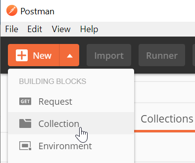</p>
<ol start="2">
<li>Give it a name, but don’t click the “Create” button yet.</li>
</ol>
<p>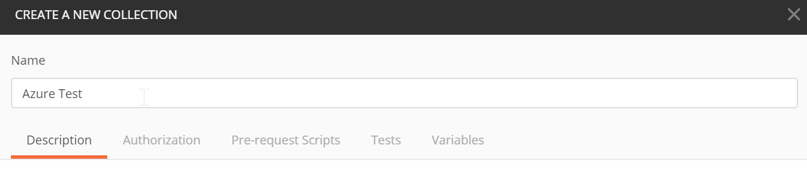</p>
<h3 id="pre-request-script"><a class="header-anchor" href="#pre-request-script"></a>Pre-Request Script</h3>
<p>Postman allows you to assign a pre-request script to a collection, which is code that will run before every request.  We’ll use that to generate a <code>bearerToken</code> that is required in the <code>Authorization</code> header of each Azure REST API request.</p>
<p>This script will do a POST to <a href="http://login.microsoftonline.com" target="_blank" rel="noopener">login.microsoftonline.com</a> and put the response token in a global variable called <code>bearerToken</code>.</p>
<ol>
<li>Copy this code block into your collections pre-request script block.</li>
</ol>
<figure class="highlight javascript"><table><tr><td class="code"><pre><span class="line">pm.sendRequest(&#123;</span><br><span class="line">    url: <span class="string">'https://login.microsoftonline.com/'</span> + pm.variables.get(<span class="string">"tenantId"</span>) + <span class="string">'/oauth2/token'</span>,</span><br><span class="line">    method: <span class="string">'POST'</span>,</span><br><span class="line">    header: <span class="string">'Content-Type: application/x-www-form-urlencoded'</span>,</span><br><span class="line">    body: &#123;</span><br><span class="line">        mode: <span class="string">'urlencoded'</span>,</span><br><span class="line">        urlencoded: [ </span><br><span class="line">            &#123;<span class="attr">key</span>: <span class="string">"grant_type"</span>, <span class="attr">value</span>: <span class="string">"client_credentials"</span>, <span class="attr">disabled</span>: <span class="literal">false</span>&#125;,</span><br><span class="line">            &#123;<span class="attr">key</span>: <span class="string">"client_id"</span>, <span class="attr">value</span>: pm.variables.get(<span class="string">"clientId"</span>), <span class="attr">disabled</span>: <span class="literal">false</span>&#125;,</span><br><span class="line">            &#123;<span class="attr">key</span>: <span class="string">"client_secret"</span>, <span class="attr">value</span>: pm.variables.get(<span class="string">"clientSecret"</span>), <span class="attr">disabled</span>: <span class="literal">false</span>&#125;,</span><br><span class="line">            &#123;<span class="attr">key</span>: <span class="string">"resource"</span>, <span class="attr">value</span>: pm.variables.get(<span class="string">"resource"</span>), <span class="attr">disabled</span>: <span class="literal">false</span>&#125;</span><br><span class="line">        ]</span><br><span class="line">    &#125;</span><br><span class="line">&#125;, <span class="function"><span class="keyword">function</span> (<span class="params">err, res</span>) </span>&#123;</span><br><span class="line">    pm.globals.set(<span class="string">"bearerToken"</span>, res.json().access_token);</span><br><span class="line">&#125;);</span><br></pre></td></tr></table></figure>
<p>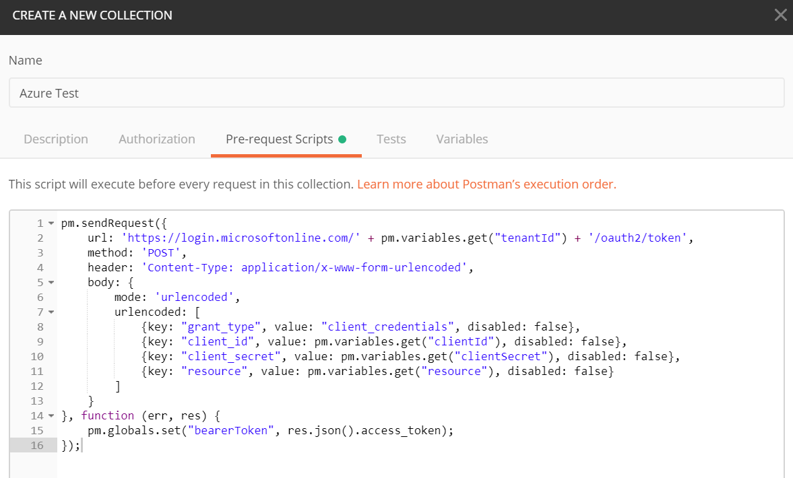</p>
<h3 id="variables"><a class="header-anchor" href="#variables"></a>Variables</h3>
<p>Postman allows you to set variables at the collection level. We’ll put the variables required by the pre-request script and the Azure REST APIs in the “Variables” tab.</p>
<ol>
<li>Create the following variables.  We’ll add the variable values in the next section, so keep this form open.</li>
</ol>
<blockquote>
<p>Make sure you add the variable values to the <strong>CURRENT VALUE</strong> column NOT the Initial Value column.</p>
</blockquote>
<figure class="highlight plain"><table><tr><td class="code"><pre><span class="line">clientId</span><br><span class="line">clientSecret</span><br><span class="line">tenantId</span><br><span class="line">subscriptionId</span><br><span class="line">resource: https://management.azure.com/</span><br></pre></td></tr></table></figure>
<p>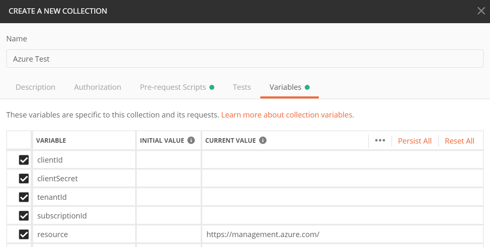</p>
<p>Keep the “Create Collection” dialog open and continue to the next step.</p>
<h2 id="get-azure-variables"><a class="header-anchor" href="#get-azure-variables"></a>Get Azure Variables</h2>
<ol>
<li>
<p>Open Azure Cloud Shell - <a href="https://shell.azure.com" target="_blank" rel="noopener">https://shell.azure.com</a></p>
</li>
<li>
<p>Create a Service Principal</p>
</li>
</ol>
<p>Run the following command to create a service principal - which is a non-user account that can be used to call the Azure REST APIs.</p>
<blockquote>
<p>Make sure you change <code>sp1</code> with a unique name.</p>
</blockquote>
<p><code>az ad sp create-for-rbac -n &quot;sp1&quot;</code></p>
<p>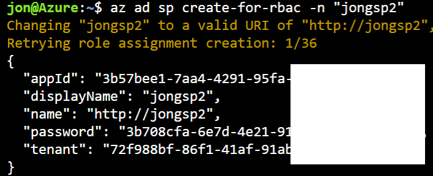</p>
<ol start="3">
<li>Copy the outputed variables to Postman Collection variables</li>
</ol>
<figure class="highlight plain"><table><tr><td class="code"><pre><span class="line">clientId = appId</span><br><span class="line">clientSecret = password</span><br><span class="line">tenantId = tenant</span><br></pre></td></tr></table></figure>
<p>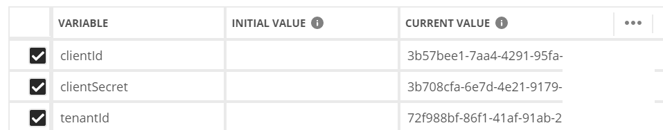</p>
<ol start="4">
<li>Get Subscription Id</li>
</ol>
<p>Run the following command to get your subscription Id.</p>
<p><code>az account show --query id -otsv</code></p>
<p>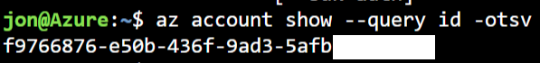</p>
<ol start="5">
<li>Copy the outputed Subscription Id to Postman Collection Variables tab</li>
</ol>
<p>At this point your variables tab should look like this - with every variable filled out.</p>
<p>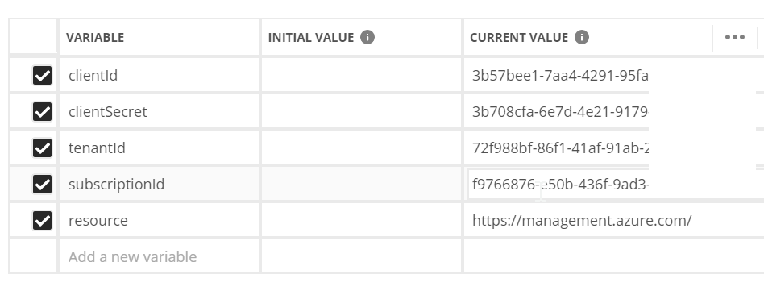</p>
<h2 id="finish-creating-collection"><a class="header-anchor" href="#finish-creating-collection"></a>Finish Creating Collection</h2>
<ol>
<li>Click the ‘Create’ Button on the Postman Collection form.</li>
</ol>
<p>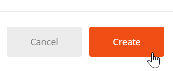</p>
<h2 id="create-postman-request"><a class="header-anchor" href="#create-postman-request"></a>Create Postman Request</h2>
<ol>
<li>
<p>Paste the following URI into the Postman Request URI field<br>
<code>https://management.azure.com/subscriptions/{{subscriptionId}}/resourcegroups?api-version=2017-05-10</code></p>
</li>
<li>
<p>Create an <code>Authorization</code> header and set value to <code>Bearer {{bearerToken}}</code></p>
</li>
<li>
<p>Save the Request to the Postman Collection you created earlier.</p>
</li>
</ol>
<p>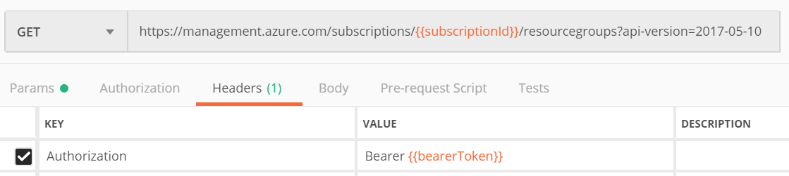</p>
<p>The Postman Collection pane should now look like this:</p>
<p>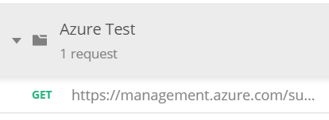</p>
<h2 id="execute-request"><a class="header-anchor" href="#execute-request"></a>Execute Request</h2>
<ol>
<li>
<p>Click the ‘Send’ Button</p>
</li>
<li>
<p>Observe Request Output</p>
</li>
</ol>
<p>You will see the REST request output in the bottom pane</p>
<figure class="highlight javascript"><table><tr><td class="code"><pre><span class="line">&#123;</span><br><span class="line">    <span class="string">"value"</span>: [</span><br><span class="line">        &#123;</span><br><span class="line">            <span class="string">"id"</span>: <span class="string">"/subscriptions/f9766876-e50b-436f-9ad3-/resourceGroups/DefaultResourceGroup-EUS"</span>,</span><br><span class="line">            <span class="string">"name"</span>: <span class="string">"DefaultResourceGroup-EUS"</span>,</span><br><span class="line">            <span class="string">"location"</span>: <span class="string">"eastus"</span>,</span><br><span class="line">            <span class="string">"tags"</span>: &#123;&#125;,</span><br><span class="line">            <span class="string">"properties"</span>: &#123;</span><br><span class="line">                <span class="string">"provisioningState"</span>: <span class="string">"Succeeded"</span></span><br><span class="line">            &#125;</span><br><span class="line">        &#125;</span><br><span class="line">    ]</span><br><span class="line">&#125;</span><br></pre></td></tr></table></figure>
<p>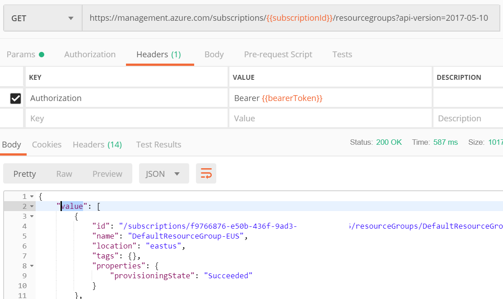</p>
<p>And that is how to call the Azure REST APIs with Postman in no time flat!</p>
<p>Jon</p>

        </div>
        <footer>
        </footer>
    </div>
</article>

    <section id="comments">
    
        
    <div id="disqus_thread">
        <noscript>Please enable JavaScript to view the <a href="//disqus.com/?ref_noscript">comments powered by Disqus.</a></noscript>
    </div>

    
    </section>


                            
                        </div>
                    </section>
                    <aside id="sidebar">
    <a class="sidebar-toggle" title="Expand Sidebar">
        <i class="toggle icon"></i>
    </a>
    <div class="sidebar-top">

        <ul class="social-links">
            
            
            <li>
                <a class="social-tooltip" title="twitter" href="http://twitter.com/jongallant"
                    target="_blank">
                    <i class="icon fa fa-twitter"></i>
                </a>
            </li>
            
            
            
            <li>
                <a class="social-tooltip" title="github" href="https://github.com/jongio"
                    target="_blank">
                    <i class="icon fa fa-github"></i>
                </a>
            </li>
            
            
            
            <li>
                <a class="social-tooltip" title="rss" href="http://feeds.feedburner.com/jongallant"
                    target="_blank">
                    <i class="icon fa fa-rss"></i>
                </a>
            </li>
            
            
            
            <li>
                <a class="social-tooltip" title="linkedin" href="http://www.linkedin.com/in/jongallant"
                    target="_blank">
                    <i class="icon fa fa-linkedin"></i>
                </a>
            </li>
            
            
            
            <li>
                <a class="social-tooltip" title="youtube" href="https://www.youtube.com/jongallant"
                    target="_blank">
                    <i class="icon fa fa-youtube"></i>
                </a>
            </li>
            
            
        </ul>
    </div>
    
    
    <nav id="article-nav">
        
            <a href="/2019/05/hiring-devs/" id="article-nav-newer" class="article-nav-link-wrap">
                <strong class="article-nav-caption">
                    newer
                </strong>
                <p class="article-nav-title">
                    
                        I&#39;m Hiring Devs
                            
                </p>
                <i class="icon fa fa-chevron-left" id="icon-chevron-left"></i>

            </a>
            
                
                    <a href="/2019/03/postman-collection-readonly/" id="article-nav-older" class="article-nav-link-wrap">
                        <strong class="article-nav-caption">
                            older
                        </strong>
                        <p class="article-nav-title">
                            Solution to Postman Collection Created as Read only
                        </p>
                        <i class="icon fa fa-chevron-right" id="icon-chevron-right"></i>

                    </a>
                    
    </nav>
    
    

    <div class="widgets-container">
        
        
        <br/>
<div style="position:relative;height:0;padding-bottom:56.25%"><iframe src="https://www.youtube.com/embed/videoseries?list=PLiMIJTv6gK5_Zmdcmbo-kxAbpeGjSou9x&amp;showinfo=0?ecver=2" width="640" height="360" frameborder="0" gesture="media" allow="encrypted-media" style="position:absolute;width:100%;height:100%;left:0" allowfullscreen></iframe></div>
<br/>
        
        <div class="github-card" data-github="jongio" data-width="340" data-height="150" data-theme="default"></div>
<script src="//cdn.jsdelivr.net/github-cards/latest/widget.js"></script>
        
        <a class="twitter-timeline" data-height="700" href="https://twitter.com/jongallant?ref_src=twsrc%5Etfw"></a> <script async src="https://platform.twitter.com/widgets.js" charset="utf-8"></script>
        
        

        <div class="rail-ad">
            <!-- rail -->
            <ins class="adsbygoogle" style="display:block" data-ad-client="ca-pub-7253926757222509" data-ad-slot="7222147978"
                data-ad-format="auto" data-full-width-responsive="true"></ins>
            <script>
                (adsbygoogle = window.adsbygoogle || []).push({});
            </script>

            <!-- rail -->
            <!-- 2nd rail -->
            <ins class="adsbygoogle" style="display:block" data-ad-client="ca-pub-7253926757222509" data-ad-slot="1523952970"
                data-ad-format="auto" data-full-width-responsive="true"></ins>
            <script>
                (adsbygoogle = window.adsbygoogle || []).push({});
            </script>
        </div>
    </div>
</aside>
                </div>
            </div>
        </div>
        <div class="banner-ad">
    <!-- banner -->
    <ins class="adsbygoogle" style="display:block" data-ad-client="ca-pub-7253926757222509" data-ad-slot="8838481977"
        data-ad-format="auto" data-full-width-responsive="true"></ins>
    <script>
        (adsbygoogle = window.adsbygoogle || []).push({});
    </script>
</div>
<footer id="footer">
    <div class="container">
        <div class="container-inner">
            <a id="back-to-top" href="javascript:;"><i class="icon fa fa-angle-up"></i></a>
            <div class="credit">
                <h1 class="logo-wrap">
                    <a href="/" class="logo-n"></a>
                </h1>
                <p>&copy;
                    2020
                    Jon Gallant
                </p>
                <p>Disclaimer: The opinions expressed herein are my own personal opinions and do not represent my
                    employer’s view in any way.</p>
            </div>

        </div>
    </div>
</footer>
        
    
    <script>
    var disqus_shortname = 'jongallant';
    
    
    var disqus_url = 'https://blog.jongallant.com/2019/04/azure-rest-apis-postman-in-no-time-flat/';
    
    (function() {
    var dsq = document.createElement('script');
    dsq.type = 'text/javascript';
    dsq.async = true;
    dsq.src = '//' + disqus_shortname + '.disqus.com/embed.js';
    (document.getElementsByTagName('head')[0] || document.getElementsByTagName('body')[0]).appendChild(dsq);
    })();
    </script>


    
        <script src="/libs/lightgallery/js/lightgallery.min.js"></script>
        <script src="/libs/lightgallery/js/lg-thumbnail.min.js"></script>
        <script src="/libs/lightgallery/js/lg-pager.min.js"></script>
        <script src="/libs/lightgallery/js/lg-autoplay.min.js"></script>
        <script src="/libs/lightgallery/js/lg-fullscreen.min.js"></script>
        <script src="/libs/lightgallery/js/lg-zoom.min.js"></script>
        <script src="/libs/lightgallery/js/lg-hash.min.js"></script>
        <script src="/libs/lightgallery/js/lg-share.min.js"></script>
        <script src="/libs/lightgallery/js/lg-video.min.js"></script>
    


<!-- Custom Scripts -->
<script src="/js/main.js"></script>

    </div>
</body>

</html>